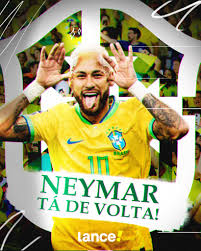
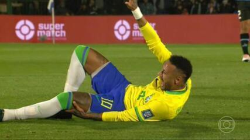

1992
O começo
Nasceu em 5 de fevereiro, em Mogi das Cruzes, São Paulo. Desde pequeno, o futebol fazia parte da sua vida.
A Última Dança na Copa do Mundo de 2026

Na Copa do Mundo de 2026, Neymar está vivendo uma situação diferente das edições anteriores.
Ele foi convocado por Carlo Ancelotti para disputar sua quarta Copa do Mundo. Apresenta "boa evolução", com expectativa de retorno durante a fase de grupos. Ele reassumiu a tradicional camisa 10 da seleção.
O próprio Neymar declarou que a Copa de 2026 deverá ser a última de sua carreira, mas desta vez o protagonismo é dividido com jogadores como Raphinha e Endrick.

A trajetória de Neymar em Copas do Mundo é marcada por um doloroso histórico de problemas físicos. Em 2014, uma grave fratura na vértebra lombar tirou o craque das semifinais, enquanto em 2018 ele chegou sem ritmo após operar o pé direito, e em 2022 uma contusão no tornozelo o tirou de dois jogos da fase de grupos.
No Mundial de 2026, o fantasma das lesões voltou a assombrar o camisa 10 da Seleção Brasileira antes mesmo da bola rolar. O atacante foi diagnosticado com uma lesão muscular de grau 2 na panturrilha direita, sofrida em maio durante uma partida pelo Santos, o que acendeu um novo alerta médico.
Por conta desse problema na panturrilha, o jogador acabou ficando de fora da partida de estreia do Brasil contra o Marrocos. Atualmente, ele segue em tratamento intensivo com a fisioterapia e corre contra o tempo para tentar retornar ao gramado na sequência da fase de grupos
Criado na Baixada Santista, Neymar começou jogando futebol de areia e futsal. Foi descoberto pelo olheiro Betinho aos 6 anos e lapidou sua habilidade de drible rápido nas quadras antes de chegar à base do Santos, aos 11 anos.
Estreou no profissional aos 17 anos (2009) e virou uma febre nacional. Com seus cabelos moicanos e dancinhas, liderou o Santos nas conquistas da Copa do Brasil (2010) e da Libertadores (2011), virando o maior jogador da América do Sul.
Em 2013, foi para o Barcelona, onde formou o lendário trio MSN com Messi e Suárez. Lá ele ganhou tudo, incluindo a Champions League de 2015, sendo o artilheiro do torneio.
Em 2017, protagonizou a transferência mais cara da história do futebol (222 milhões de euros) ao ir para o PSG, onde acumulou títulos nacionais, mas sofreu com lesões. Em 2023, transferiu-se para o Al-Hilal, da Arábia Saudita.
Conquistou o inédito Ouro Olímpico em 2016 e superou Pelé para se tornar o maior artilheiro da história da Seleção Brasileira masculina nas contas da FIFA.

Uma carreira de talento, dribles e momentos inesquecíveis. Relembre a trajetória de Neymar e acompanhe o contexto da Seleção Brasileira rumo à Copa do Mundo de 2026.

Uma página especial sobre o sonho de ver o camisa 10 em mais um Mundial.
De Mogi das Cruzes ao futebol internacional, Neymar construiu uma carreira marcada por habilidade e grandes momentos.
Nasceu em 5 de fevereiro, em Mogi das Cruzes, São Paulo. Desde pequeno, o futebol fazia parte da sua vida.
Estreou profissionalmente pelo Santos ainda adolescente e rapidamente virou destaque nacional.
Chegou à Europa e formou um trio histórico com Messi e Suárez, conquistando a Champions League em 2015.
Iniciou uma nova etapa na França, com grandes atuações e protagonismo no futebol europeu.
Passou pelo Al-Hilal, na Arábia Saudita, e retornou ao Santos em 2025.
Conheça algumas linhas de chuteiras usadas por Neymar durante diferentes fases de sua carreira.
 FASE INICIAL
FASE INICIAL
Linha associada à velocidade e ao visual marcante. Neymar usou modelos Mercurial no início da carreira.
 BARCELONA / PSG
BARCELONA / PSG
Uma linha voltada a jogadores ofensivos e habilidosos, usada por Neymar em fases da carreira europeia.
 FASE PUMA
FASE PUMA
Após sua parceria com a Nike, Neymar passou a usar chuteiras da Puma, incluindo modelos da linha Future.
Uma galeria visual dedicada ao futebol e aos momentos que fazem parte do esporte.
Algumas imagens são ilustrativas. Para fotos de Neymar, consulte a galeria do Wikimedia Commons.
Pedaladas, canetas e criatividade: recursos que fizeram dos dribles uma marca registrada de Neymar.
ASSISTIR VÍDEOS DE SKILLS
Veja os melhores lances no YouTube
O estilo de Neymar combina improviso, controle próximo da bola e coragem para tentar jogadas inesperadas.
Consulte fontes públicas para conhecer melhor a trajetória: Comitê Olímpico do Brasil, CBF e FIFA.